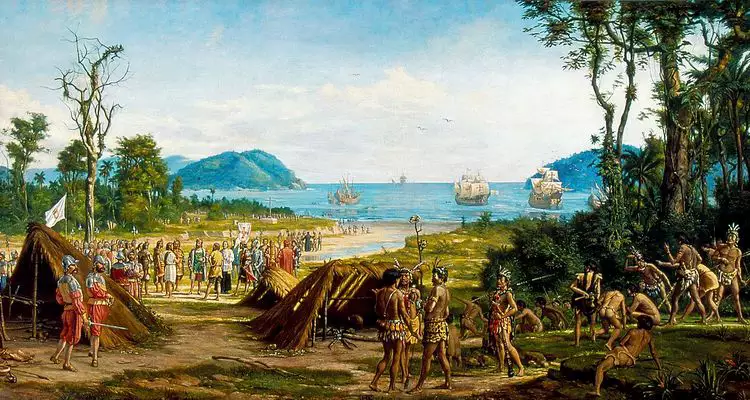

Fundação
A descoberta do Brasil, em 22 de abril de 1500, pela esquadra comandada por Pedro Álvares Cabral, com destino às Índias, integra o ciclo da expansão marítima portuguesa. Inicialmente denominada Terra de Vera Cruz, depois Santa Cruz e, finalmente, Brasil, a nova terra foi explorada a princípio em função da extração do pau-brasil, madeira de cor vermelha usada em tinturaria na Europa, e que deu o nome à terra.
Várias expedições exploradoras (Gonçalo Coelho, Gaspar de Lemos) e guarda-costas (Cristóvão Jacques) foram enviadas pelo rei de Portugal, a fim de explorar o litoral e combater piratas e corsários, principalmente franceses, para garantir a posse da terra. O sistema de feitorias, já utilizado no comércio com a África e a Ásia, foi empregado tanto para a defesa como para realizar o escambo (troca) do pau-brasil com os indígenas. A exploração do pau-brasil, monopólio da Coroa portuguesa, foi concedida ao cristão-novo Fernão de Noronha.

A partir de 1530, tem início a colonização efetiva, com a expedição de Martim Afonso de Sousa, cujos efeitos foram o melhor reconhecimento da terra, a introdução do cultivo da cana-de-açúcar e a criação dos primeiros engenhos, instalados na recém-fundada cidade de São Vicente, no litoral de São Paulo, que no século 16 chegou a ter treze engenhos de açúcar. A economia açucareira, entretanto, vai se concentrar no Nordeste, principalmente em Pernambuco. Estava baseada no tripé latifúndio--monocultura--escravidão. A cana-de-açúcar, no Nordeste, era cultivada e beneficiada em grandes propriedades, que empregavam mão-de-obra dos negros africanos trazidos como escravos, e destinava-se à exportação.
Ao lado do ciclo da cana-de-açúcar, ocorrido na zona da mata, desenvolveu-se o ciclo do gado. A pecuária aos poucos ocupou toda a área do agreste e do sertão nordestinos e a bacia do rio São Francisco. No século 18, o ciclo da mineração do ouro e dos diamantes em Minas Gerais levou à ocupação do interior da colônia. A sociedade mineradora era mais diversificada do que a sociedade açucareira, extremamente ruralizada. Na zona mineira, ao lado dos proprietários e escravos, surgiram classes intermediárias, constituídas por comerciantes, artesãos e funcionários da Coroa.
Política e administrativamente a colônia estava subordinada à metrópole portuguesa, que, para mais facilmente ocupá-la, adotou, em 1534, o sistema de capitanias hereditárias. Consistia na doação de terras pelo rei de Portugal a particulares, que se comprometiam a explorá-las e povoá-las. Apenas duas capitanias prosperaram: São Vicente e Pernambuco. As capitanias hereditárias somente foram extintas em meados do século 18.
Em 1548, a Coroa portuguesa instituiu o governo geral, para melhor controlar a administração da colônia. O governador-geral Tomé de Sousa possuía extensos poderes, e administrava em nome do rei a capitania da Bahia, cuja sede, Salvador -- primeira cidade fundada no Brasil, foi também sede do governo geral até 1763, quando a capital da colônia foi transferida para o Rio de Janeiro. A administração local era exercida pelas câmaras municipais, para as quais eram eleitos os colonos ricos, chamados “homens bons”.
O papel da Igreja Católica era da mais alta importância. A ela cabiam tarefas administrativas, a assistência social, o ensino e a catequese dos indígenas. Dentre as diversas ordens religiosas, destacaram-se os jesuítas.
Invasões estrangeiras. Durante o período colonial, o Brasil foi alvo de várias incursões estrangeiras, sobretudo de franceses, ingleses e holandeses. Os franceses chegaram a fundar, em 1555, uma colônia, a França Antártica, na ilha de Villegaignon, na baía de Guanabara. Somente foram expulsos em 1567, em combate do qual participou Estácio de Sá, fundador da cidade do Rio de Janeiro (1565). Mais tarde, entre 1612 e 1615, novamente os franceses tentaram estabelecer uma colônia no Brasil, desta vez no Maranhão, chamada França Equinocial.
Os holandeses, em busca do domínio da produção do açúcar (do qual eram os distribuidores na Europa), invadiram a Bahia, em 1624, sendo expulsos no ano seguinte. Em 1630, uma nova invasão holandesa teve como alvo Pernambuco, de onde estendeu-se por quase todo o Nordeste, chegando até o Rio Grande do Norte. Entre 1637 e 1645, o Brasil holandês foi governado pelo conde Maurício de Nassau, que realizou brilhante administração. Em 1645, os holandeses foram expulsos do Brasil, no episódio conhecido como insurreição pernambucana.